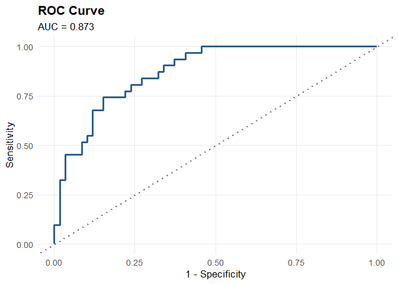

triageR provides a streamlined, reproducible workflow for building, validating, and reporting clinical prediction models in R. It combines standard machine learning tools with an optional AI agent that recommends appropriate statistical methods, runs automated sensitivity analyses, and flags common clinical modelling pitfalls. Reports are generated in a format aligned with TRIPOD+AI reporting guidance, to support reproducible, guideline-conscious research.
Why triageR?
Most of the R machine learning tooling (tidymodels, mlr3, caret) is general-purpose. Clinical researchers are left to manually stitch together model fitting, validation, sensitivity analysis, explainability, and TRIPOD-compliant reporting across many separate packages. triageR brings these into one coherent workflow, with clinically-aware safeguards built in, such as warning when validation is performed only on training data, and flagging low events-per-variable ratios before you finalize a model.
The AI agent layer is entirely optional, every core function works without any LLM/API key. The agent adds method recommendations, plain language pipeline review summaries, and assists with sensitivity analysis interpretation, but is never required to fit, validate, or explain a model.
Installation
You can install the development version of triageR from GitHub with:
# install.packages("devtools")
devtools::install_github("DevWebWacky/triageR")Example workflow
This example uses the PIMA Indians Diabetes dataset to demonstrate the full triageR pipeline, from raw data to a validated, explainable model.
# 3. Split, fit, and validate
set.seed(42)
train_idx <- sample(seq_len(nrow(pima_imputed)), size = floor(0.7 * nrow(pima_imputed)))
train <- pima_imputed[train_idx, ]
test <- pima_imputed[-train_idx, ]
model <- tr_fit(train, outcome = "type", engine = "logistic_reg")
#> Model fitted successfully using engine: logistic_reg
validation <- tr_validate(model, newdata = test)
#> Validation metrics (newdata):
#> # A tibble: 4 × 3
#> .metric .estimator .estimate
#> <chr> <chr> <dbl>
#> 1 roc_auc binary 0.873
#> 2 sens binary 0.742
#> 3 spec binary 0.797
#> 4 accuracy binary 0.778
#>
#> Confusion Matrix:
#> Truth
#> Prediction No Yes
#> No 47 8
#> Yes 12 23
# 4. Review the pipeline for common pitfalls
review <- tr_agent_review(train, model, use_agent = FALSE)
#>
#> --- triageR Pipeline Review ---
#>
#> No major issues flagged.See vignette("triageR-intro") for the full walkthrough, including model explainability, sensitivity analysis, engine comparison (logistic regression vs. random forest vs. boosted trees), and TRIPOD+AI report generation.
Core functions
| Layer | Function | Purpose |
|---|---|---|
| Data | tr_load_clinical() |
Load and standardize clinical data |
| Data | tr_check_missing() |
Missingness summary and visualization |
| Data | tr_impute() |
Multiple imputation (mice / missForest) |
| Model | tr_fit() |
Fit a binary clinical prediction model |
| Model | tr_validate() |
Discrimination metrics, confusion matrix, and ROC curve |
| Model | tr_explain() |
Variable importance / SHAP explanations |
| Agent | tr_recommend_method() |
AI-suggested statistical/ML approach |
| Agent | tr_sensitivity() |
Automated sensitivity analysis battery |
| Agent | tr_agent_review() |
Pipeline pitfall checks (imbalance, EPV, leakage) |
| Report | tr_tripod_report() |
TRIPOD+AI-aligned HTML/docx report |
```
Disclaimer
triageR’s AI-generated recommendations and summaries are drafting aids intended to support, not replace, expert clinical and statistical judgment. The TRIPOD+AI report generator is a drafting tool and does not guarantee full compliance with the TRIPOD+AI checklist, always review against the official checklist at the EQUATOR Network.